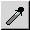
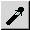
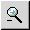
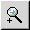
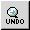
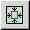
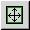
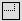
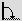

Index
XSane mode:

Scan options
Medium selection
Color management
Color correction:
Standard options window
Advanced options window
Preview:
Batch scan:
Setup:
|
The preview window is to select an area that you want to scan. You can
resize the preview window and zoom into the scan area.

With the smaller, black/white dashed frame in the preview you select the
area that shall be scanned. The larger, red/green dashed frame is only
available in COPY-mode and in FAX-mode. It shows
the size of the page of the selected printer relative to the zoom scale.
 Batch scan add area:
Batch scan add area:
Adds the selected area to the batch scan list.
Pipette white:
Use mouse pointer and click a point that shall be white. If
you use the left mouse button only the intensity is used to calculate the
white point. If RGB default (main window) is not activated you can
use the middle mouse button to define the white point for each color component.
You can abort the selection by pressing the right mouse button.

Pipette gray:
Use mouse pointer and click a point that shall be medium gray. If you use
the left mouse button only the intensity is used to calculate the gray
point. If RGB default (main window) is not activated you can use
the middle mouse button to define the gray point for each color component.
You can abort the selection by pressing the right mouse button.

Pipette black:
Use mouse pointer and click a point that shall be black. If you use the
left mouse button only the intensity is used to calculate the black point.
If RGB default (main window) is not activated you can use the middle
mouse button to define the black point for each color component. You can
abort the selection by pressing the right mouse button.
 Unzoom:
Unzoom:
Use full scan area.

Zoom out:
Increase preview area by 20%.

Zoom in:
Zoom into selected area.

Undo zoom:
Undo last zoom.

Autoselect:
Select part with image(s).
Autoraise:
Click to an image and the image will be selected.

Select visible area:
Select the visible area in the preview window for scanning.
Delete preview image cache:
Delete all images in the preview cache. When you did change anything on
the scanning surface you should press this button to make sure that
you do not use old preview images.

Preset area:
Select a sub surface of the scan surface as maximum scan area.
The defined areas are relative to the surface of the scanner.
The list of preset areas can be edited by the user:
Add active preview area selection:
- Open the menu with a short click with the left mouse button.
- Move the mouse pointer to the position where you want to add the new entry.
- Press and hold the right mouse button to open the context menu
- Select Add selection to list
Rename, reorder or delete an existing item:
- Open the menu with a short click with the left mouse button.
- Move the mouse pointer to the item you like to edit.
- Press and hold the right mouse button to open the context menu
- Select the function you like to execute

Rotation:
Select rotation angel and mirror plane. Take care that the
preset areas are relative to the scanner surface (not to the
display surface): so they also are rotated on display when you select
a rotation.
Aspect ratio:
Define the aspect ratio width:height of the created image.
You can only draw the selection frame with the selected aspect ratio.
RGB values:
The frame shows the red, green and blue color components of the pixel under the
mouse pointer. The top line shows the values of the raw image, the bottom line
shows the values of the enhanced image.
Acquire Preview:
Start preview scan. If you resized the preview window, the new preview
is done with updated resolution.
Cancel Preview:
Cancel a preview scan.
Left mouse button:
Select scan area: Press (&hold) left mouse button to define
one edge, move the mouse so that the area you want to scan is in the frame
and release the button.
Edit scan area: Move the pointer over an edge or side of the
existing selection, the mouse pointer changes. Now press (&hold) the left
mouse button, you can move the draged edge/side of the scanarea, then release the
left mouse button.
Right and middle mouse button:
If you press (&hold) the right or the middle mouse button in the selection
frame you can move the selection frame without resizing it.
|